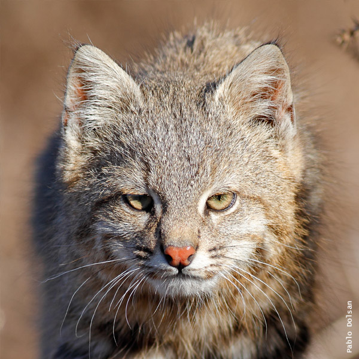

Gato del Pajonal
- Nombre científico: Leopardus colocolo
- Mide entre 53 y 65 cm
- Tiene un peso aproximado de 2 a 4 kg
El Gato del Pajonal es un felino terrestre y acostumbra cazar al nivel del suelo. No suele trepar a los árboles. Rara vez es observado y sus hábitos, si bien varían con las distintas subespecies y rangos geográficos, son mayormente nocturnos o crepusculares, aunque no es imposible encontrarlo de día. Se oculta entre matas, en oquedades de árboles o entre piedras. Cuando es amenazado eriza su tupido manto y puede llegar a trepar árboles y lanzar bufidos. Se alimenta de aves terrestres, mayormente de sus pichones y huevos. En la Patagonia es conocida su afición por los nidos de pingüinos. También preda sobre pequeños roedores, como cuises o ratas de campo y otros de mayor tamaño como chinchillones o vizcachas.
Su coloración tiene como rasgo fundamental que las patas delanteras están rayadas transversalmente de pardo oscuro a negro. Por lo común el dorso es grisáceo y las patas amarillentas, anaranjadas o acaneladas, pudiendo la cola ser de color uniforme o tener anillos incompletos o difusos. La parte trasera de las orejas es usualmente gris o negra. El rinario por lo general es rosado.